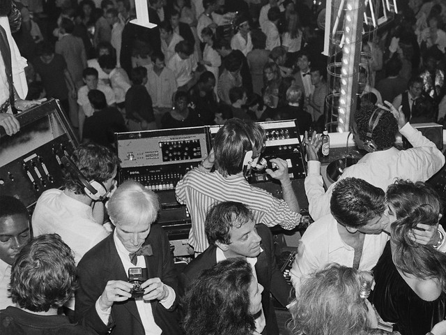
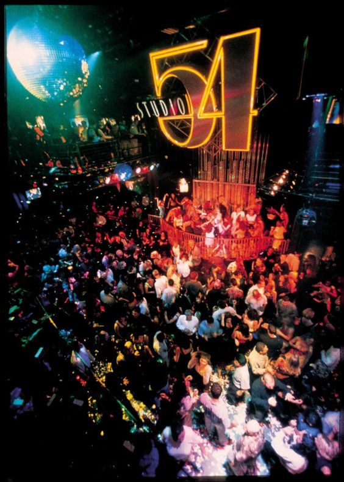
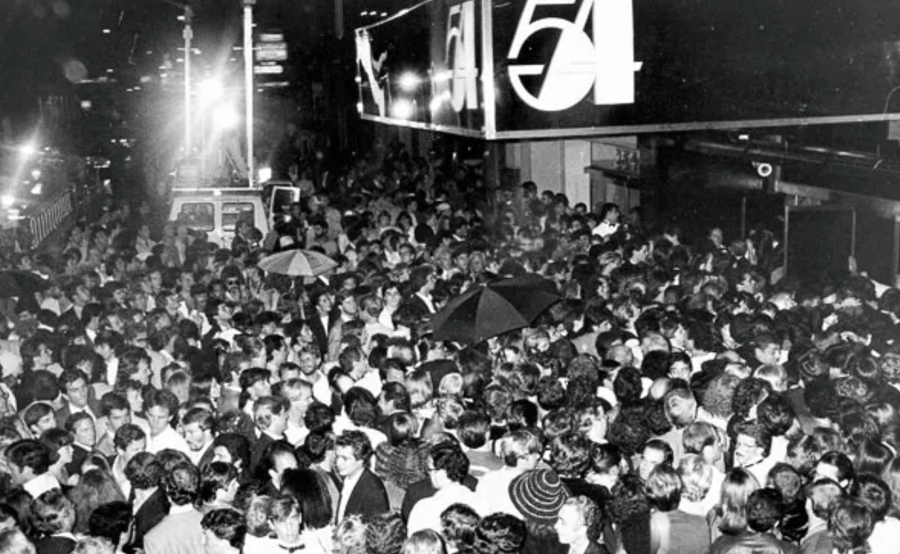
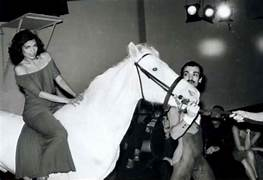
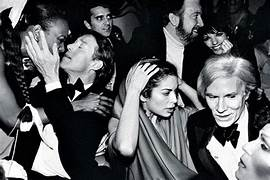
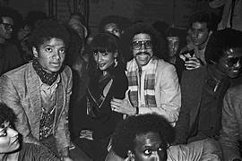
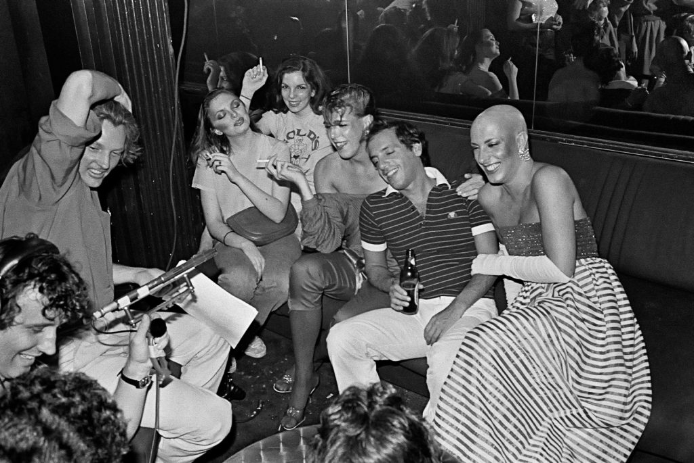

La dittatura all’ingresso e la democrazia sul dancefloor


Lo Studio 54 è stato un celebre nightclub situato a New York City, negli Stati Uniti.
Aperto nel 1977, è diventato rapidamente un'icona della cultura pop e un punto di riferimento
per la scena della musica e della moda degli anni '70.
Lo Studio 54 era noto per il suo stile di vita eccentrico e la sua atmosfera esuberante.
Era frequentato da celebrità, musicisti, artisti e personaggi influenti dell'epoca.
Il club era rinomato per le sue feste sfarzose e gli spettacoli di intrattenimento stravaganti,
che includevano ballerini in costume, trapezisti e performance teatrali.

La musica era un elemento fondamentale dello Studio 54. Il club era famoso per i suoi DJ di fama
internazionale, come DJ Larry Levan, che suonavano una varietà di generi musicali, tra cui disco,
funk e soul. Le luci al neon, la pista da ballo in vetro, gli specchi e le decorazioni eccentriche
contribuivano a creare un'atmosfera unica e stimolante.



Da sinistra: Bianca Jagger, Halston, Elsa Peretti, Andy Warhol, Michael Jackson
Nonostante la sua breve esistenza, lo Studio 54 ha lasciato un'impronta indelebile nella cultura popolare.
È stato un luogo di trasgressione, di libertà sessuale e di celebrazione dell'individualità.
La discoteca è stata chiusa nel 1980 a causa di problemi legali legati all'evasione fiscale e alla droga,
ma la sua eredità come simbolo dell'epoca disco è sopravvissuta fino ad oggi.

Oggi, lo Studio 54 viene ricordato come uno dei club più iconici e influenti nella storia della musica e della vita
notturna. La sua eredità continua ad ispirare e influenzare la cultura contemporanea, e molti ricordano ancora con
nostalgia i suoi tempi d'oro come un'epoca di libertà, espressione artistica e celebrazione senza limiti.